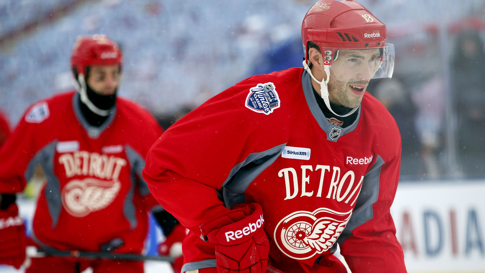

In this world, we all have different hobies. Some say it shouldnt be a sport. Others say it should. A hobby is something you do a lot and love doing. For me, that happens to be the sport Hockey. I picked up hockey when I was around 3 years old and am still playing today. My dad,grandpa,cousins,and brothers all play the sport hockey. I enjoy this hobby so much even when I am just messing around in my backyard with family or even my dogs.Hockey has become my home and life for the past 15 years and is defintly my Favorite hobby ever.
When people devolp hobbies, they start to question themselves and say, "why do I love this so much?" that is because of the joy it brings us. If you get home from a long day of school or work, and you find something that can take that stress away and make you happy and joyful, theres no reason why you should not be doing that. In life, we need to be happy and enjoy our selves. If being on your phone all day or learning new things or even playing a sport brings you that much joy, just do it and do not listen to any other opinion.
| 2020 | 2021 | 2022 | 2023 | 2024 |
|---|---|---|---|---|
| Tampa Bay Lightning | Tampa Bay Lightning | Colorado Avalanche | Vegas Golden Knights | Flordia Panthers |
| 4 games to 2 | 4 games to 1 | 4 games to 2 | 4 games to 1 | 4 games to 3 |
I am going to showcase my top reasons on why I belive picking up hockey as a hobby is a good choice